1. Choisir son microphone
Pour ouvrir Murmure Vauclaire, appuyez sur la touche Windows du clavier, tapez « Murmure Vauclaire », puis appuyez sur Entrée.
Dans le menu de gauche, cliquez sur Système (1).
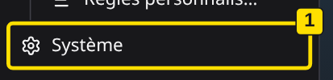
Ouvrez la liste des microphones (2), puis cliquez sur celui que vous utilisez (3). Son nom peut être différent de celui de l’exemple.
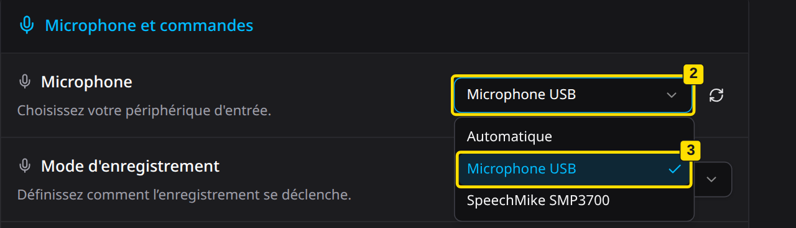
Dans Mode d’enregistrement, ouvrez la liste (4) et choisissez « Appuyer pour démarrer/arrêter » (5) pour le premier essai.
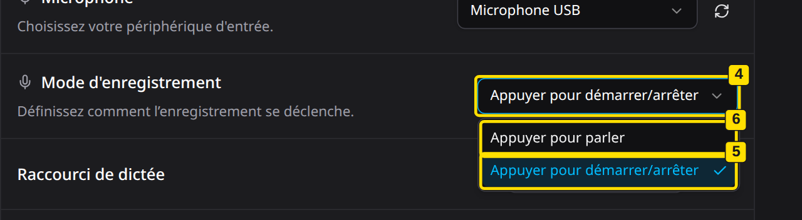
2. Faire sa première dictée
Laissez Murmure Vauclaire ouvert. Ouvrez ensuite l’application dans laquelle vous souhaitez écrire : un document, un courriel ou une autre zone de texte.
Cliquez dans la zone où le texte doit apparaître (1). Une petite barre verticale, appelée curseur, indique l’endroit où le texte sera écrit.
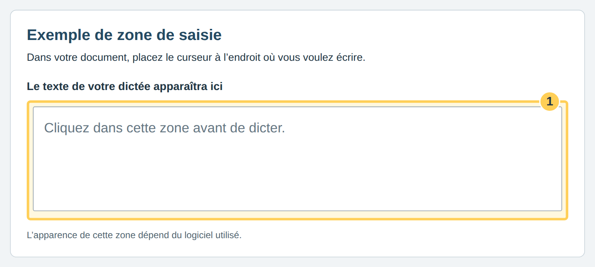
Essayez avec une phrase simple
Les étapes suivantes utilisent F9, la touche initiale. Si vous l’avez modifiée, utilisez la touche affichée dans Système.
- Appuyez une fois sur F9 pour démarrer l’enregistrement.
- Dites : « Ceci est un essai de dictée ».
- Appuyez à nouveau sur F9 pour terminer.
- Attendez que le texte apparaisse, puis relisez-le.
3. Personnaliser les touches du clavier
Cliquez sur Système dans le menu de gauche.
Cliquez dans la zone de la commande à modifier : dictée (1), collage de la dernière transcription (2) ou annulation de l’enregistrement (3).
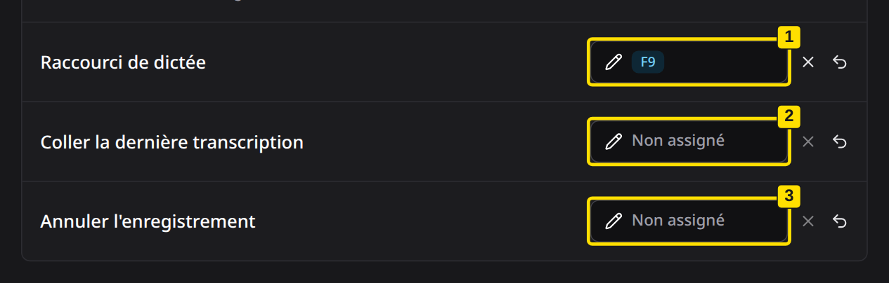
- Appuyez sur la touche ou la combinaison que vous souhaitez utiliser.
- Validez avec Entrée. Pour abandonner la modification, appuyez sur Échap.
- Testez votre nouvelle commande dans un document d’essai.
| Commande | À quoi sert-elle ? |
|---|---|
| Raccourci de dictée | Démarrer et terminer la dictée selon le mode choisi. F9 est la valeur initiale. |
| Coller la dernière transcription | Réinsérer le dernier texte reconnu dans la zone où se trouve le curseur. |
| Annuler l’enregistrement | Abandonner l’enregistrement en cours sans insérer son contenu. |
4. Commande vocale
Une commande vocale permet de remplacer une expression dictée par un signe ou un texte. Des commandes sont fournies par défaut ; vous pouvez également créer les vôtres.
Dicter la ponctuation : les commandes par défaut
Pendant votre dictée, prononcez les expressions ci-dessous. Les commandes fournies les remplacent par la ponctuation correspondante.
| Dites… | Pour obtenir… |
|---|---|
| insérer un point | . |
| insérer une virgule | , |
| saut de ligne | Un retour à la ligne |
| nouveau paragraphe | Une ligne vide entre deux paragraphes |
| ouvrir les guillemets | Un guillemet : " |
| fermer les guillemets | Un guillemet : " |
Un exercice simple
Vérifiez le point et le passage à la ligne. Les majuscules peuvent varier : corrigez-les si nécessaire.
Créer une commande vocale
Dans le menu de gauche, cliquez sur Règles personnalisées (1), sous Personnaliser.
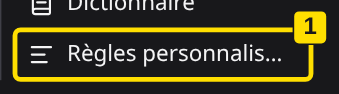
Faites défiler la page vers le bas avec la molette de la souris, jusqu’à « Ajouter une règle personnalisée ». Cliquez dans le premier champ (2) et saisissez « formule de fin ». Cliquez dans le second (3) et saisissez « Bonne journée. ».
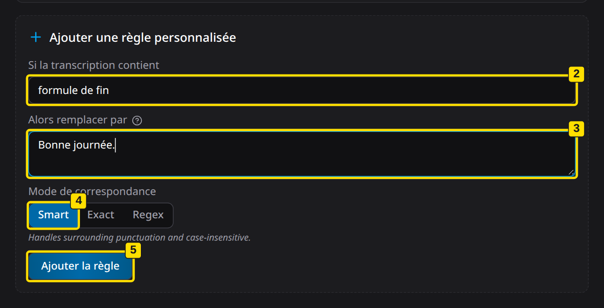
Conservez Smart (4), puis cliquez sur Ajouter la règle (5). Dans un document d’essai, dictez « formule de fin » et vérifiez le résultat.
5. Enrichir le dictionnaire
Dans le menu de gauche, cliquez sur Dictionnaire (1), sous Personnaliser.
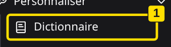
Cliquez dans le champ de saisie (2), puis écrivez le mot avec la bonne orthographe. Exemple : « ergothérapie ». Cliquez sur Ajouter (3).
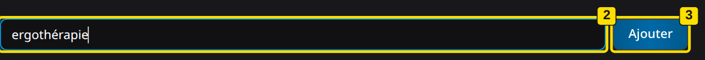
Le mot apparaît dans la liste. Faites une nouvelle dictée d’essai pour vérifier sa reconnaissance.
Corriger un mot mal écrit
Cliquez sur la petite croix à droite du mot à supprimer (4), puis ajoutez sa bonne orthographe avec le champ et le bouton montrés ci-dessus.
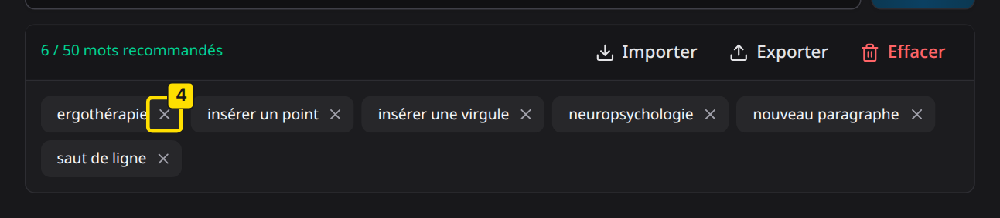
6. Convertir les nombres
Dans le menu de gauche, cliquez sur Règles personnalisées, sous Personnaliser.
En haut de la page, cliquez sur l’interrupteur « Convertir les nombres en chiffres » (1) pour l’activer.
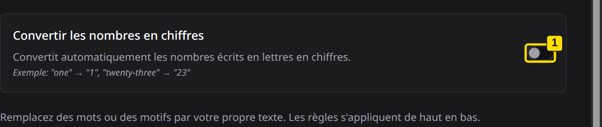
Ouvrez la liste de langue (2), puis cliquez sur Français (3).
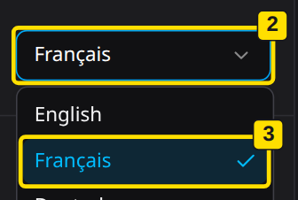
Cliquez dans le champ du seuil (4) et saisissez 0 pour permettre la conversion de tous les nombres reconnus.
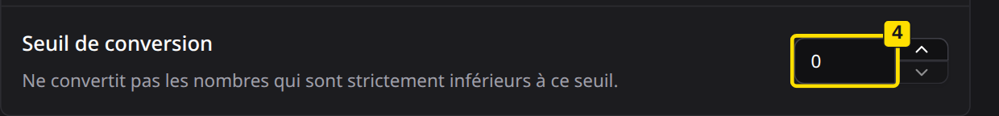
La conversion est désactivée dans la configuration initiale. Le même interrupteur (1) permet de la désactiver à nouveau.
7. Retrouver un texte et masquer la fenêtre
Dans le menu de gauche, cliquez sur Accueil (1).
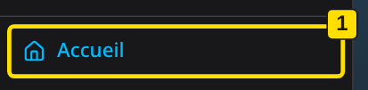
Dans Activité récente, cliquez sur le texte souhaité (2). Il est copié.
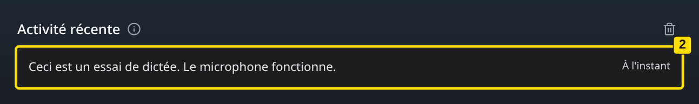
Revenez dans votre document et cliquez à l’endroit où vous voulez insérer le texte (1 dans l’exemple ci-dessous).
Maintenez Ctrl, appuyez sur V, puis relâchez les touches : le texte est collé. Vérifiez qu’il n’avait pas déjà été inséré avant de le coller une seconde fois.
Masquer la fenêtre de Murmure Vauclaire
Dans la fenêtre Murmure Vauclaire, Alt + F4 masque la fenêtre et laisse la dictée disponible. Pour retrouver Murmure Vauclaire, appuyez sur Windows, tapez « Murmure Vauclaire », puis Entrée.
8. Problème courant
| Ce que vous constatez | Ce que vous pouvez vérifier |
|---|---|
| La dictée ne démarre pas. | Vérifiez que Murmure Vauclaire est ouvert, puis vérifiez votre touche et le mode d’enregistrement. Voir « Choisir son microphone » et « Personnaliser les touches ». |
| Le microphone ne capte pas votre voix. | Vérifiez son branchement et le microphone sélectionné. Voir « Choisir son microphone ». |
| Le texte n’apparaît pas. | Attendez la fin du traitement. Vérifiez la zone de saisie sélectionnée. Vous pouvez récupérer le texte dans Activité récente : voir « Retrouver un texte ». |
| Une commande de ponctuation reste écrite. | Prononcez l’expression exacte du tableau de la rubrique « Dicter la ponctuation ». |
Le microphone vient d’être branché
Dans Système, cliquez sur le bouton d’actualisation à droite de la liste des microphones (1), puis sélectionnez votre microphone comme indiqué dans la rubrique « Choisir son microphone ».
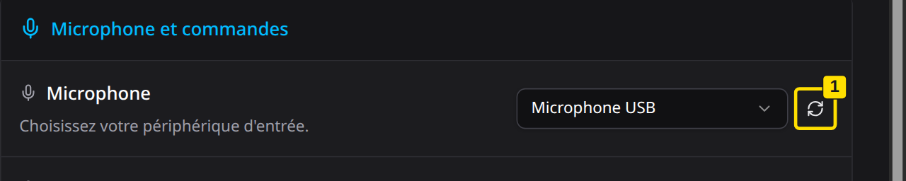
Si vous disposez d’un SpeechMike
Cette partie concerne le Philips SpeechMike SMP3700 sous Windows. Si vous utilisez un autre microphone, le parcours au clavier des rubriques précédentes suffit.
Branchez le SpeechMike. Pour utiliser ses boutons avec Murmure Vauclaire, il doit être en mode Event.
Activer le mode Event
- Sur le microphone, maintenez simultanément les boutons •EoL/••Prio (fin de lettre/priorité) et INS/OVR (insertion/remplacement) pendant trois secondes, puis relâchez-les.
- Les voyants des boutons clignotent ensemble en orange.
- Appuyez sur F1 du microphone pour sélectionner le mode Event. Le microphone quitte alors la sélection des modes.
Pour vérifier le mode actif, appuyez brièvement sur •EoL/••Prio et INS/OVR ensemble : le voyant de F1 s’allume brièvement en orange lorsque le mode Event est actif.
Sélectionner le SpeechMike dans Murmure Vauclaire
Dans le menu de gauche, cliquez sur Système.
Ouvrez la liste Microphone (1) et cliquez sur l’entrée de votre SpeechMike (2).
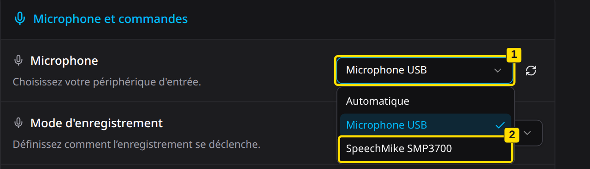
Le guide du microphone remplace les commandes clavier. Pour initialiser les boutons, appuyez puis relâchez REC une première fois, sans dicter. Attendez que le message « SpeechMike prêt » (3) apparaisse avant de commencer votre dictée.
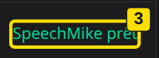
Les boutons du SpeechMike
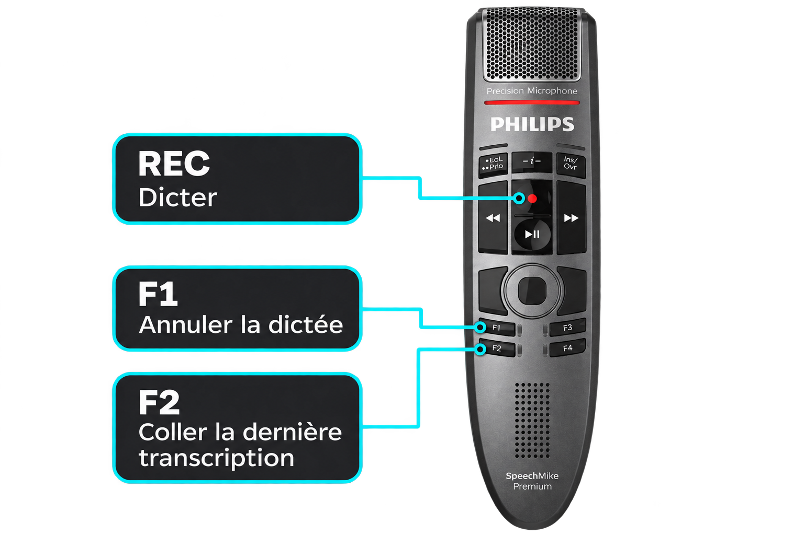
| Bouton du microphone | Action |
|---|---|
| REC | Démarrer et arrêter la dictée. En mode « Appuyer pour parler », maintenir puis relâcher. |
| F1 | Annuler l’enregistrement en cours sans insérer son contenu. |
| F2 | Coller la dernière transcription dans la zone où se trouve le curseur. |
Revenir au clavier
Terminez la dictée. Dans Système, ouvrez la liste Microphone (2) et cliquez sur un autre microphone (3). Vos raccourcis clavier redeviennent disponibles.